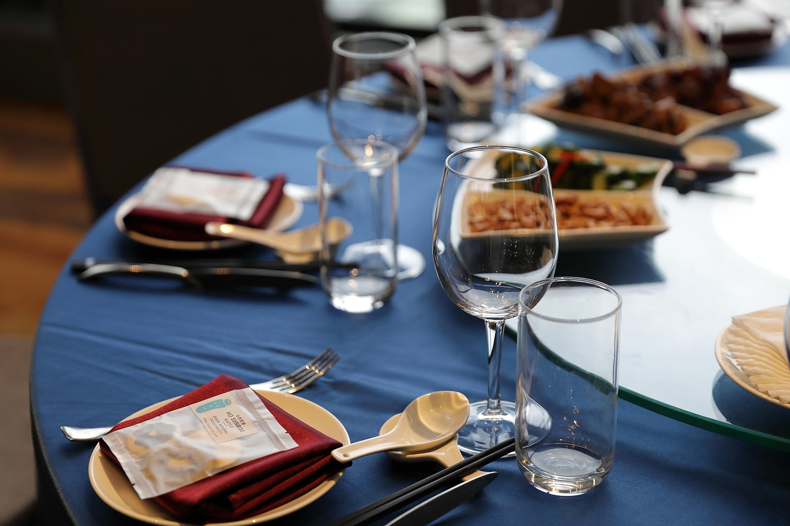

TORCH
Reštaurácia
v Bratislave.
Lipnická 312/83, Bratislava
Ilustračná fotografia z fotobanky. Nezobrazuje priestory Torch.
Priestor pre
vaše stretnutie.
Torch nájdete na Lipnickej v Bratislave. Aktuálnu ponuku si overte priamo v reštaurácii — telefonicky alebo na jej oficiálnej stránke.

Čo je dnes
v ponuke?
Najaktuálnejšie informácie patria priamo od Torch. Pozrite si oficiálnu stránku alebo zavolajte.
Oficiálna stránka TorchMáte otázku
pred návštevou?
Na ponuku, dostupnosť stola aj ďalšie podrobnosti sa informujte na telefónnom čísle reštaurácie.
+421 904 410 410Nájdite si
svoj čas.
Obed alebo večer? Pred cestou si pozrite otváracie hodiny a trasu na Lipnickú. Aktuálne informácie si môžete potvrdiť priamo v Torch.
Adresa a otváracie hodinyFotografie v tomto koncepte sú vizuálnou inšpiráciou. Nezobrazujú jedlá, tím ani interiér Torch.

Pri stole.
Malý denník svetla, detailov a prípravy. Všetky zábery sú ilustračné fotografie z fotobanky, nie fotografie Torch ani jeho ponuky.
Svetlo v priestore
Priestor · Ilustračná fotografia, nie interiér Torch
Za každým tanierom
Príprava · Ilustračná fotografia, nie kuchyňa Torch
Spolu pri stole
Pri stole · Ilustračná fotografia, nie ponuka Torch
Posledný detail
Príprava · Ilustračná fotografia, nie ponuka Torch
Denné svetlo
Priestor · Ilustračná fotografia, nie interiér Torch
Torch. Bratislava.
Ozvite sa nám.
+421 904 410 410 ↗Otváracie hodiny
Pondelok – štvrtok11:00 – 22:00
Piatok – sobota11:00 – 23:00
Nedeľa11:00 – 22:00
Priamo od Torch
Navštíviť oficiálny web ↗Aktuálnu ponuku a podrobnosti návštevy si overte priamo v reštaurácii.
Nezávislý koncept. Kontaktné údaje a hodiny vychádzajú z dodaného zadania; pred návštevou si ich overte.